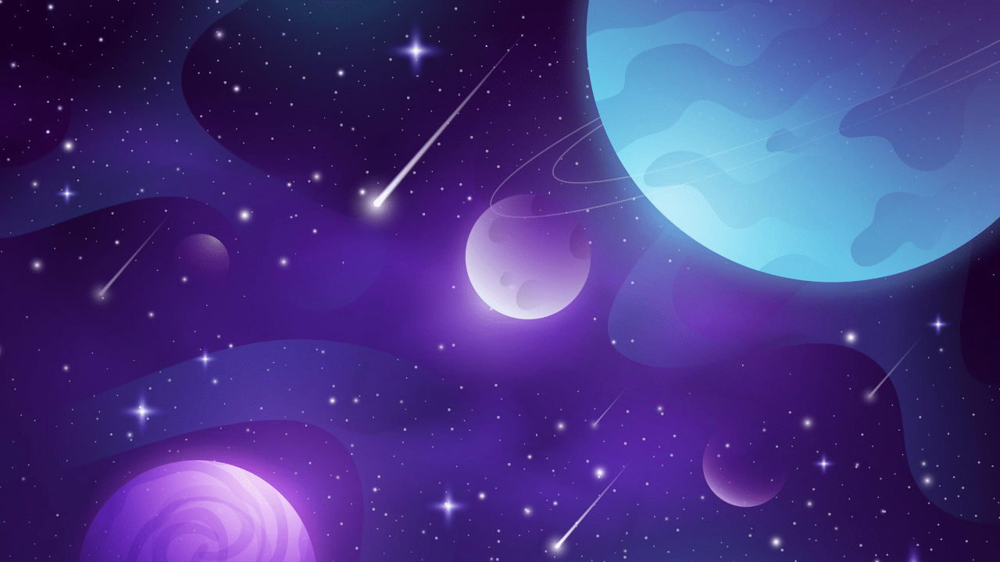

Materiais resistentes à radiação espacial
avariado
Este experimento tem como objetivo analisar os efeitos da
microgravidade na densidade óssea e muscular dos astronautas
que ficam por longos períodos a bordo da ISS. A pesquisa busca
entender como a falta de gravidade afeta o corpo humano e
quais são as consequências a longo prazo.Descrição
Passo a passo para o reparo
Avaliar o dano ao experimento e determinar o que foi
afetado;
Identificar as peças que precisam ser reparadas ou
substituídas;
Remover as peças danificadas com cuidado para não prejudicar
ainda mais o experimento;
Adicionar novo item...
Pesquisar
background por Freepik